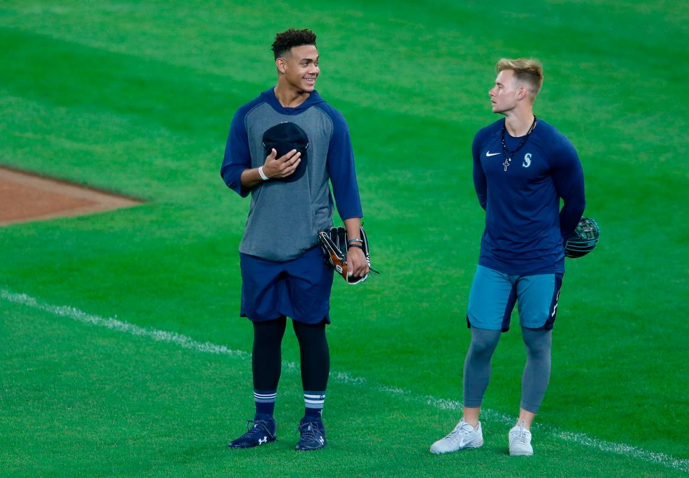

Those two handsome lads are Jared Kelenic (right) and Julio Rodriguez (left) are the 4th and 5th ranked in the MLB pipeline top 100. After a complete overhaul following the 2018 the once abysmal Mariners farm sytem was rejuvenized and is now a top farm system in the leageu. Ideally, Keleinc will be in the MLB this month with Jrod not far behind him.